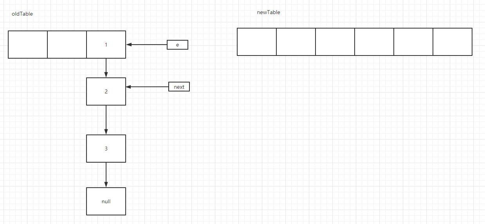

HashMap 1.7
1. 初始化
1.1 主要是几个属性：
1static final int DEFAULT_INITIAL_CAPACITY = 1 << 4; // 默认的初始化容量，值为 2^4 也就是16
2static final int MAXIMUM_CAPACITY = 1 << 30; // 最大容量 2^30 也就是1073741824
3static final float DEFAULT_LOAD_FACTOR = 0.75f; // 默认负载因子
4static final Entry<?,?>[] EMPTY_TABLE = {}; // 空的entry数组
5transient Entry<K,V>[] table = (Entry<K,V>[]) EMPTY_TABLE; // 扩容需要的entry数组，长度必须是2的整数次幂，原因会在后面讲
6transient int size; // map中所有的键值对数量，注意不是entry数组的元素个数
7transient int modCount; // 修改次数，后续会详细说
8static final int ALTERNATIVE_HASHING_THRESHOLD_DEFAULT = Integer.MAX_VALUE; // 大意是说是一个默认的阈值，当一个键值对的键是String类型时，且map的容量达到了这个阈值，就启用备用哈希（alternative hashing）。备用哈希可以减少String类型的key计算哈希码（更容易）发生哈希碰撞的发生率。该值可以通过定义系统属性jdk.map.althashing.threshold来指定。如果该值是1，表示强制总是使用备用哈希；如果是-1则表示禁用。 这个跟内部类Holder有关，而holder又跟扩容有关。TODO
1.2 构造方法有四个
1public HashMap()
2public HashMap(int initialCapacity)
3public HashMap(int initialCapacity, float loadFactor)
4public HashMap(Map<? extends K, ? extends V> m)
- 调用关系如下图

所以这里要介绍 public HashMap(int initialCapacity, float loadFactor)
- HashMap(int initialCapacity, float loadFactor)
1// 其实非常简单，这里只是校验下初始化的容量和阈值。
2public HashMap(int initialCapacity, float loadFactor) {
3 if (initialCapacity < 0)
4 throw new IllegalArgumentException("Illegal initial capacity: " +initialCapacity);
5 if (initialCapacity > MAXIMUM_CAPACITY)
6 initialCapacity = MAXIMUM_CAPACITY;
7 if (loadFactor <= 0 || Float.isNaN(loadFactor))
8 throw new IllegalArgumentException("Illegal load factor: " +
9 loadFactor);
10 // 由上述可知，容量的大小为1---MAXIMUM_CAPACITY也就是2的30次幂之间
11 this.loadFactor = loadFactor;
12 threshold = initialCapacity; // 阈值也与初始化容量大小一样
13 init(); // 这个方法是父类的方法，LinkedHashMap使用了，这里没有使用
14}
- HashMap(Map<? extends K, ? extends V> m)
1public HashMap(Map<? extends K, ? extends V> m) {
2 this(Math.max((int) (m.size() / DEFAULT_LOAD_FACTOR) + 1,
3 DEFAULT_INITIAL_CAPACITY), DEFAULT_LOAD_FACTOR);
4 // 这个需要重点解析下，因为在后续初始化entry数组的时候还会遇到
5 inflateTable(threshold);
6 // 因为这个方法与createEntry有关，我们后续会详细分析createEntry，到时候会提到这个方法
7 putAllForCreate(m);
8}
- 详解inflateTable(int toSize)
- 首先这个方法的名称含义为：表膨胀，从名字中我们也可以猜到，跟map的扩容有关，所以这个方法需要好好分析下
- 我们把相关的方法一起复制过来，然后分析
1/**
2* 膨胀表
3*/
4private void inflateTable(int toSize) {
5 // Find a power of 2 >= toSize
6 //找出不小于所给值且为2的n次幂的值，至于为什么会是2的n次幂，我们接下来也会分析TODO
7 int capacity = roundUpToPowerOf2(toSize);
8
9 // 阈值为容量 * 负载因子
10 threshold = (int) Math.min(capacity * loadFactor, MAXIMUM_CAPACITY + 1);
11 table = new Entry[capacity];
12 initHashSeedAsNeeded(capacity);
13}
14
15/**
16* 这个方法的目的就是找出不小于传入值，且为2的n次幂的值
17*/
18private static int roundUpToPowerOf2(int number) {
19 // assert number >= 0 : "number must be non-negative";
20 return number >= MAXIMUM_CAPACITY
21 ? MAXIMUM_CAPACITY
22 : (number > 1)? Integer.highestOneBit((number - 1) << 1)
23 : 1;
24
25}
-
- 先来说roundUpToPowerOf2
1private static int roundUpToPowerOf2(int number) {
2 // assert number >= 0 : "number must be non-negative";
3 return number >= MAXIMUM_CAPACITY
4 ? MAXIMUM_CAPACITY
5 : (number > 1)? Integer.highestOneBit((number - 1) << 1)
6 : 1;
7
8}
-
-
- 根据 Integer源码分析我们可知Integer.highestOneBit(number)得到的就是小于等于num且为2的n次幂的最大数。
- 左移一位表示把这个数翻倍。
- 减一是为了处理特殊情况，比如number恰巧为8，16，32等等。
- 由上述可知，roundUpToPowerOf2方法的目的即为获取大于等于number的最小2的n次幂的值。
-
-
- 由上，我们可知inflateTable前三行的意思了：根据传入的capacity可以得到大于等于传入的capacity的最小的2的n次幂的值。然后根据这个容量大小初始化一个空的Entry数组。
-
- 再来说initHashSeedAsNeeded
1final boolean initHashSeedAsNeeded(int capacity) {
2 // 因为hashSeed初始化就是为0，所以首次调用该方法时currentAltHashing即为false
3 boolean currentAltHashing = hashSeed != 0;
4 // 一般情况下，sun.misc.VM.isBooted()为true
5 // 一般情况下，capacity >= Holder.ALTERNATIVE_HASHING_THRESHOLD为false，故useAltHashing 为false
6 boolean useAltHashing = sun.misc.VM.isBooted() &&
7 (capacity >= Holder.ALTERNATIVE_HASHING_THRESHOLD);
8 // false ^ false 为false
9 boolean switching = currentAltHashing ^ useAltHashing;
10 // 所以一般情况下，不会走到这里。
11 if (switching) {
12 hashSeed = useAltHashing
13 ? sun.misc.Hashing.randomHashSeed(this)
14 : 0;
15 }
16 return switching;
17}
- 综上，我们已经把inflateTable方法分析清楚了，其实就是把Entry数组初始化。其中Entry数组的初始化大小即为大于等于number的最小的2的n次幂。
2. put方法
put方法是hashMap的最重要的方法，所以我们会重点分析，篇幅会比较长。
1public V put(K key, V value) {
2 // 首次自然是空，所以要走初始化方法，而这个方法我们上文讲过，不再赘述。
3 if (table == EMPTY_TABLE) {
4 // 注意在这一步，阈值为容量 * 负载因子
5 inflateTable(threshold);
6 }
7 if (key == null)
8 // 查看2.1 putForNullKey(value)
9 return putForNullKey(value);
10 // 查看2.3 Hash方法
11 int hash = hash(key);
12 // 查看2.2 indexFor(hash, table.length)
13 int i = indexFor(hash, table.length);
14 // 找到key对应的位置后，就要遍历这个位置对应的链表
15 for (Entry<K,V> e = table[i]; e != null; e = e.next) {
16 Object k;
17 // hash值相等，且key相等的话，就会用新值去覆盖旧值，同时把旧值返回。
18 if (e.hash == hash && ((k = e.key) == key || key.equals(k))) {
19 V oldValue = e.value;
20 e.value = value;
21 // 空方法，在LinkedHashMap中有实现。
22 e.recordAccess(this);
23 return oldValue;
24 }
25 }
26
27 // 数据加一，作用后续会讲。
28 modCount++;
29 // 查看2.4 addEntry(hash, key, value, i)
30 addEntry(hash, key, value, i);
31 // 这里有一个小细节，如果put一个新的键值对，put方法会返回null。
32 return null;
33}
2.1 putForNullKey(value)
1/**
2* 这个方法主要是处理key为null的特殊情况。由此我们也可知道，HashMap是可以存储key为null的情况的
3*/
4private V putForNullKey(V value) {
5 // 只遍历数组第一位的链表。由此我们可知hashMap中key为null的键值对只会在数组第一位保存。
6 for (Entry<K,V> e = table[0]; e != null; e = e.next) {
7 if (e.key == null) {
8 V oldValue = e.value;
9 e.value = value;
10 // 这个方法是一个空方法，在LinkedHashMap里有实现。
11 e.recordAccess(this);
12 return oldValue;
13 }
14 }
15 // 数据加一，作用后续会讲。
16 modCount++;
17 // 这个方法是put方法的重要内容，会在后边着重讲。
18 addEntry(0, null, value, 0);
19
20 return null;
21}
2.2 indexFor(hash, table.length)
1static int indexFor(int h, int length) {
2 // assert Integer.bitCount(length) == 1 : "length must be a non-zero power of 2";
3 return h & (length-1);
4}
这个方法其实也很好理解，因为length即为Entry数组的长度，而我们又知道length的值为2的n次幂。length 的2进制表示形式为最高位为1，其余位为0。那么由此可知，length - 1的二进制为最高位变为0(当然，最高位之前的依然为0)，之后的位数全部变为1。 例如：
164： 0000 0000 0000 0000 0000 0000 0100 0000
264 - 1 ： 0000 0000 0000 0000 0000 0000 0011 1111
这样，当任意一个hash值与length - 1做与运算的时候有两个好处：
-
得到的值一定小于length，因为原来的length最高位的1已经变为了0，与运算得到的结果对应的length的原最高位为0，这样一定会对应Entry数组中的一个位置，而不用担心数组角标越界。
-
因为后边均为1，则能最大程度得保留原hash值的特征，能最大限度得减少hash碰撞（试想一下，如果length没有减1，则经过与运算后，最高位之后的值均变为0，hash碰撞的可能性将大大增加）。
2.3 Hash方法
1final int hash(Object k) {
2 int h = hashSeed;
3 if (0 != h && k instanceof String) {
4 return sun.misc.Hashing.stringHash32((String) k);
5 }
6
7 h ^= k.hashCode();
8
9 // This function ensures that hashCodes that differ only by
10 // constant multiples at each bit position have a bounded
11 // number of collisions (approximately 8 at default load factor).
12 h ^= (h >>> 20) ^ (h >>> 12);
13 return h ^ (h >>> 7) ^ (h >>> 4);
14}
这个方法就很明确了，就是为了hash值尽量离散。用^的目的也在于此，当两个数做异或运算时，只要任何一个数发生变化，最终的结果都会不同。而与运算和或运算都不能有这样的效果。
2.4 addEntry(hash, key, value, i)
1void addEntry(int hash, K key, V value, int bucketIndex) {
2 // 这里是根据条件判断是否要扩容。
3 if ((size >= threshold) && (null != table[bucketIndex])) {
4 // 扩容逻辑，这是重点，查看2.4.2 resize(2 * table.length)
5 resize(2 * table.length);
6 hash = (null != key) ? hash(key) : 0;
7 bucketIndex = indexFor(hash, table.length);
8 }
9 // 创建Entry对象。查看2.4.1 createEntry(hash, key, value, bucketIndex)
10 createEntry(hash, key, value, bucketIndex);
11}
2.4.1 createEntry(hash, key, value, bucketIndex)
1void createEntry(int hash, K key, V value, int bucketIndex) {
2 Entry<K,V> e = table[bucketIndex];
3 table[bucketIndex] = new Entry<>(hash, key, value, e);
4 // 由此我们知道，HashMap里的size表示所有元素的个数，而不是Entry数组的个数。
5 size++;
6}
非常简单，就是用到了头插法。把最新插入的值放在了链表的最前一位。原来的第一位作为它的next节点(所以如果原来的位置没有值的话，新节点是第一个节点，它的next节点为null)。
我们不妨再看下Entry对象的结构：
1static class Entry<K,V> implements Map.Entry<K,V> {
2 final K key;
3 V value;
4 Entry<K,V> next;
5 int hash;
6
7 /**
8 * Creates new entry.
9 */
10 Entry(int h, K k, V v, Entry<K,V> n) {
11 value = v;
12 next = n;
13 key = k;
14 hash = h;
15 }
16
17 public final K getKey() {
18 return key;
19 }
20
21 public final V getValue() {
22 return value;
23 }
24
25 public final V setValue(V newValue) {
26 V oldValue = value;
27 value = newValue;
28 return oldValue;
29 }
30
31 public final boolean equals(Object o) {
32 if (!(o instanceof Map.Entry))
33 return false;
34 Map.Entry e = (Map.Entry)o;
35 Object k1 = getKey();
36 Object k2 = e.getKey();
37 if (k1 == k2 || (k1 != null && k1.equals(k2))) {
38 Object v1 = getValue();
39 Object v2 = e.getValue();
40 if (v1 == v2 || (v1 != null && v1.equals(v2)))
41 return true;
42 }
43 return false;
44 }
45
46 public final int hashCode() {
47 return Objects.hashCode(getKey()) ^ Objects.hashCode(getValue());
48 }
49
50 public final String toString() {
51 return getKey() + "=" + getValue();
52 }
53
54 /**
55 * This method is invoked whenever the value in an entry is
56 * overwritten by an invocation of put(k,v) for a key k that's already
57 * in the HashMap.
58 */
59 void recordAccess(HashMap<K,V> m) {
60 }
61
62 /**
63 * This method is invoked whenever the entry is
64 * removed from the table.
65 */
66 void recordRemoval(HashMap<K,V> m) {
67 }
68}
其实很简单，就是一个链表里的一个元素。
2.4.2 resize(2 * table.length)
1/**
2 * 扩容逻辑，首先新的容量为原来容量的2倍。
3*/
4void resize(int newCapacity) {
5 Entry[] oldTable = table;
6 int oldCapacity = oldTable.length;
7 // 容量已达最大，无法再扩容，只能在原来的基础上接着往链表上加。
8 if (oldCapacity == MAXIMUM_CAPACITY) {
9 threshold = Integer.MAX_VALUE;
10 return;
11 }
12
13 Entry[] newTable = new Entry[newCapacity];
14 // 重点，
15 // 一般为false。initHashSeedAsNeeded(newCapacity)
16 transfer(newTable, initHashSeedAsNeeded(newCapacity));
17 table = newTable;
18 threshold = (int)Math.min(newCapacity * loadFactor, MAXIMUM_CAPACITY + 1);
19}
2.4.2.1 transfer(newTable, false);
1void transfer(Entry[] newTable, boolean rehash) {
2 int newCapacity = newTable.length;
3 // 这里会出现线程安全的问题，原因就在于多个线程之间的table是共享的。
4 for (Entry<K,V> e : table) {
5 while(null != e) {
6 Entry<K,V> next = e.next;
7 // 一般情况下rehash为false，所以可以忽略这两行代码。
8 if (rehash) {
9 e.hash = null == e.key ? 0 : hash(e.key);
10 }
11 int i = indexFor(e.hash, newCapacity);
12 e.next = newTable[i];
13 newTable[i] = e;
14 e = next;
15 }
16 }
17}
-
-
-
- 这里关于扩容后的index值有一个细节（int i = indexFor(e.hash, newCapacity)
- 我们把原来的容量记为oldCapacity，新的容量记为newCapacity。因为newCapacity = oldCapacity * 2。 2. 同一个key（其实就是同一个hash），在扩容后的map里的index的值，要么跟扩容前的map里的一样，要么是 扩容前的值 + oldCapacity。 3. 原因是：newCapacity 与oldCapacity的二进制形式相比，1所在的位置比之前提前一位。则length - 1的值，差了一个1。举例最能说明问题：
-
-
115（oldCapacity -1 ）
2 0000 0000 0000 0000 0000 0000 0000 1111
331（newCapacity - 1）
4 0000 0000 0000 0000 0000 0000 0001 1111
5 为了表示方便，我们只取有实际值的。任意一个hash做与运算的时候会有几种情况：
6
7hash 0 ****
8length- 1 0 1111 1 1111
9&运算结果： 0 **** 0 ****
10以上是相同的时候。
11
12hash 1 ****
13length- 1 0 1111 1 1111
14&运算结果： 0 **** 1 ****
15以上是相差oldCapacity长度的时候。
-
-
-
- 先讲下扩容过程：
-
- Entry<K,V> next = e.next
-
-

-
-
-
-
- e.next = newTable[i] 我们假设扩容后的index还跟之前一样。
-
-
-
.png)
-
-
-
-
- newTable[i] = e;
-
-
-
.png)
-
-
-
-
- e = next;
-
-
-
.png)
-
-
-
-
-
while(null != e) ;
Entry<K,V> next = e.next;
-
-
-
-
-7829518.png)
-
-
-
-
-
- 如此循环往复，最后的结果就是：
-
-
-
-
.png)
-
-
-
-
-
- 这里有一个特点，就是链表会发生倒转。
-
-
-
-
-
-
-
-
-
- 其实index不完全一样的时候也是同样的道理：
-
-
-
-
.png)
-
-
-
-
-
- 这里有一个线程安全的问题
-
-
-
就是当有两个线程同时进行扩容的时候，假设一种情况：
-
-
-
-
-
-
-
- 在两个线程都执行完这三行代码时
-
-
-
-
-
1for (Entry<K,V> e : table) {
2 while(null != e) {
3 Entry<K,V> next = e.next;
.png)
-
-
-
-
-
-
-
- 假设第一个线程接着顺利执行完毕，第二个线程开始接着执行：
-
-
-
-
-
-
.png)
-
-
-
-
-
-
-
- 第二个线程接着执行到 e.next = newTable[i];（我们还是假设index不变）。
-
-
-
-
-
-
.png)
-
-
-
-
-
-
-
- newTable[i] = e;
-
-
-
-
-
-
.png)
-
-
-
-
-
-
-
- e = next;
-
-
-
-
-
-
.png)
-
-
-
-
-
-
-
- Entry<K,V> next = e.next;
-
-
-
-
-
-
.png)
-
-
-
-
-
-
-
- e.next = newTable[i] 这一步不变。
- newTable[i] = e;
-
-
-
-
-
-
.png)
-
-
-
-
-
-
-
- e = next;
-
-
-
-
-
-
.png)
-
-
-
-
-
-
-
- Entry<K,V> next = e.next;
-
-
-
-
-
-
.png)
-
-
-
-
-
-
-
- e.next = newTable[i];
-
-
-
-
-
-
.png)
-
-
-
-
-
-
-
- newTable[i] = e;
-
-
-
-
-
-
.png)
-
-
-
-
-
-
-
- e = next;
-
-
-
-
-
-
.png)
这时已经不符合这个条件了：while(null != e)，循环结束。这时候就出现了循环链表。
在put的时候程序运行层面还看不出明显问题，但在get的时候就会看到会一直查询。
至此，put方法也就结束了。
3. private void putForCreate(K key, V value)
这个没什么难度，就是普通的添加Entry节点
4. public V get(Object key
1public V get(Object key) {
2 if (key == null)
3 return getForNullKey();
4 Entry<K,V> entry = getEntry(key);
5
6 return null == entry ? null : entry.getValue();
7}
8
9final Entry<K,V> getEntry(Object key) {
10 if (size == 0) {
11 return null;
12 }
13 int hash = (key == null) ? 0 : hash(key);
14 for (Entry<K,V> e = table[indexFor(hash, table.length)];
15 e != null;
16 e = e.next) {
17 Object k;
18 if (e.hash == hash &&
19 ((k = e.key) == key || (key != null && key.equals(k))))
20 return e;
21 }
22 return null;
23}
get方法也没有什么要说的，逻辑很清晰。
5. public V remove(Object key)
接下来谈下remove方法：
1public V remove(Object key) {
2 Entry<K,V> e = removeEntryForKey(key);
3 return (e == null ? null : e.value);
4}
5
6final Entry<K,V> removeEntryForKey(Object key) {
7 if (size == 0) {
8 return null;
9 }
10 int hash = (key == null) ? 0 : hash(key);
11 int i = indexFor(hash, table.length);
12 Entry<K,V> prev = table[i];
13 Entry<K,V> e = prev;
14 while (e != null) {
15 Entry<K,V> next = e.next;
16 Object k;
17 if (e.hash == hash &&
18 ((k = e.key) == key || (key != null && key.equals(k)))) {
19 modCount++;
20 size--;
21 // 需要讲的点在这里，这里的if/else分支是因为删除的情况有两种
22 // 一种是删除链表的第一个元素。
23 // 另一种是删除链表的非首个元素。
24 if (prev == e)
25 table[i] = next;
26 else
27 prev.next = next;
28 e.recordRemoval(this);
29 return e;
30 }
31 prev = e;
32 e = next;
33 }
34 return e;
35}
-
Entry<K,V> prev = table[i];
Entry<K,V> e = prev;
.png)
-
while (e != null) {
Entry<K,V> next = e.next;
.png)
- 接下来就分两种情况：
- 第一个节点就是：
1// 也就是这种情况
2if (prev == e)
3 table[i] = next;
.png)
-
-
- 删除动作就完成了。整个删除流程结束。
-
-
-
第一个节点不是：
-
- 首先，不会进入if判断，会走下面的逻辑：
-
-
1prev = e;
2e = next;
.png)
-
-
- 接着进入下一次循环：
-
1Entry<K,V> next = e.next;
.png)
假设这次找到了，进入if判断：
1// 这时不满足这个条件
2if (prev == e)
3 table[i] = next;
4else
5 // 走这一步
6 prev.next = next;
.png)
删除逻辑也结束了。
6. 迭代器
迭代器有一个地方有必要说一下：
1private abstract class HashIterator<E> implements Iterator<E> {
2 Entry<K,V> next; // next entry to return
3 int expectedModCount; // For fast-fail
4 int index; // current slot
5 Entry<K,V> current; // current entry
6
7 HashIterator() {
8 expectedModCount = modCount;
9 if (size > 0) { // advance to first entry
10 Entry[] t = table;
11 // 主要就是这里有必要说一下
12 while (index < t.length && (next = t[index++]) == null)
13 ;
14 }
15 }
16
17 public final boolean hasNext() {
18 return next != null;
19 }
20
21 final Entry<K,V> nextEntry() {
22 if (modCount != expectedModCount)
23 throw new ConcurrentModificationException();
24 Entry<K,V> e = next;
25 if (e == null)
26 throw new NoSuchElementException();
27
28 if ((next = e.next) == null) {
29 Entry[] t = table;
30 while (index < t.length && (next = t[index++]) == null)
31 ;
32 }
33 current = e;
34 return e;
35 }
36
37 public void remove() {
38 if (current == null)
39 throw new IllegalStateException();
40 if (modCount != expectedModCount)
41 throw new ConcurrentModificationException();
42 Object k = current.key;
43 current = null;
44 HashMap.this.removeEntryForKey(k);
45 expectedModCount = modCount;
46 }
47}
其实逻辑也很简单，主要逻辑分三步：
- 迭代器初始化的时候找到第一个有值的链表的头结点，赋值给next，并且此时index指向这个链表所在槽位的下一个槽位。
- 当调用迭代器的next方法时，返回上一步得到的节点。
- 同时跟第一步逻辑一样，找下一个有值的链表的头结点，如此循环往复，直到遍历结束。